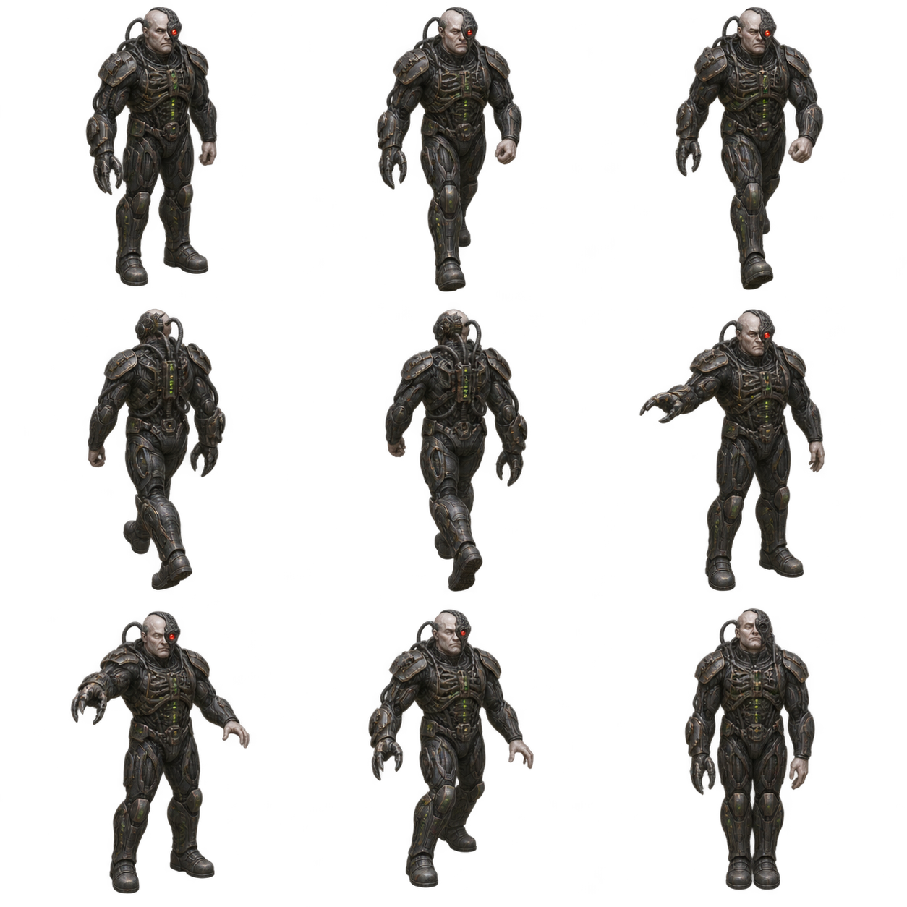
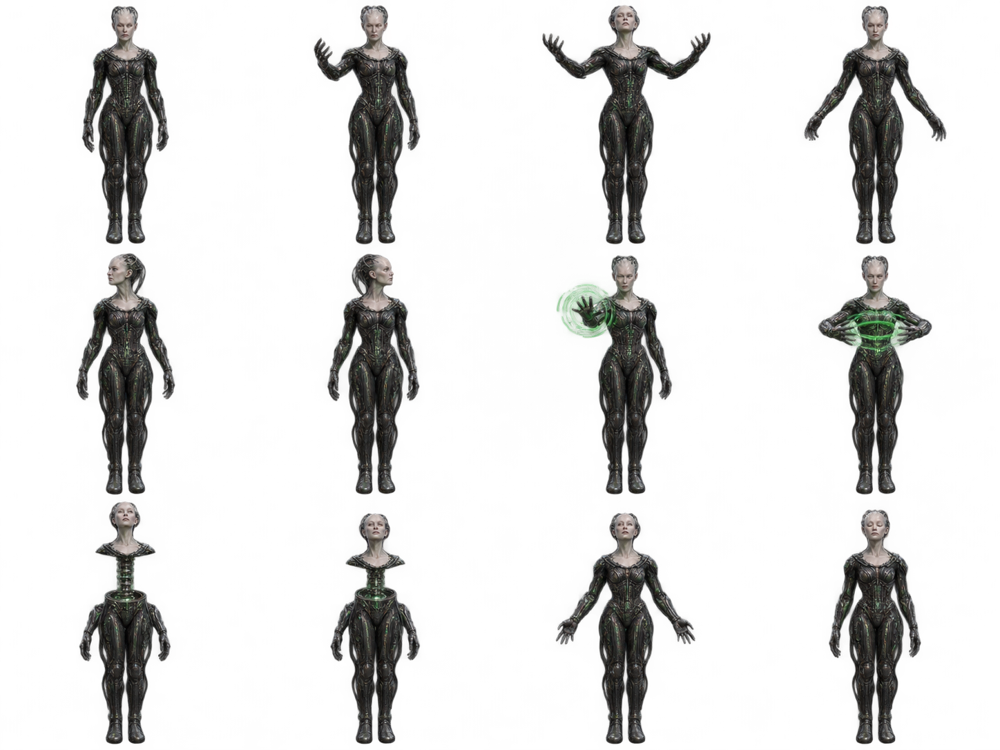
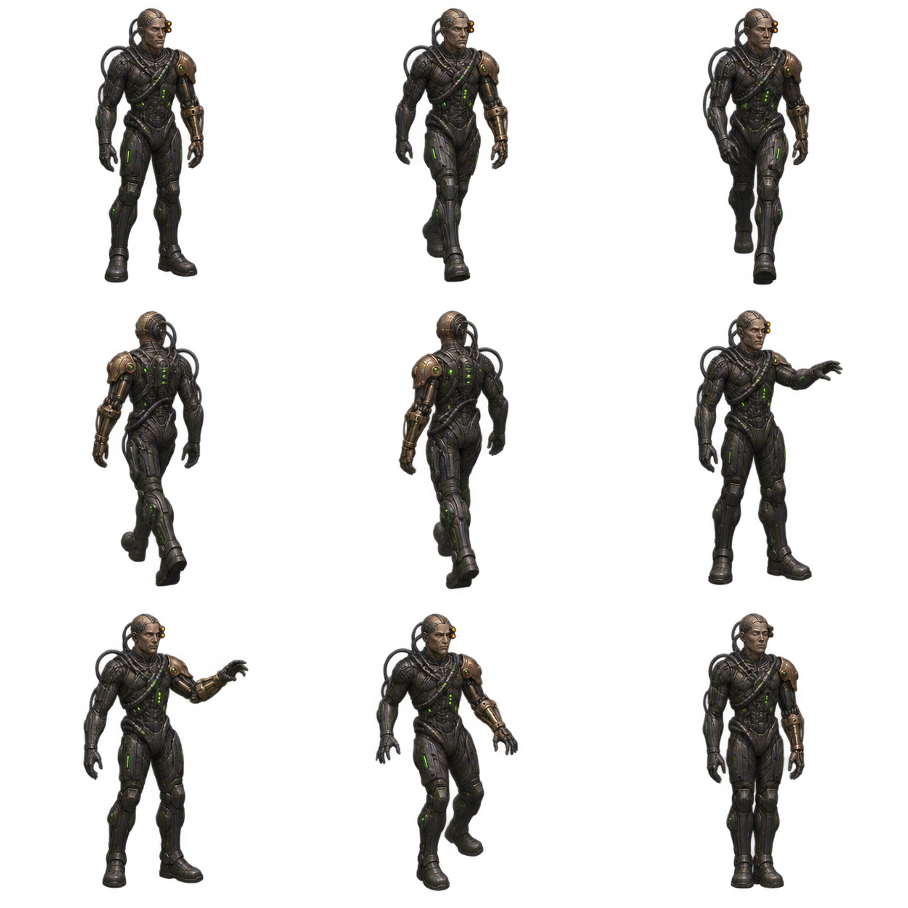
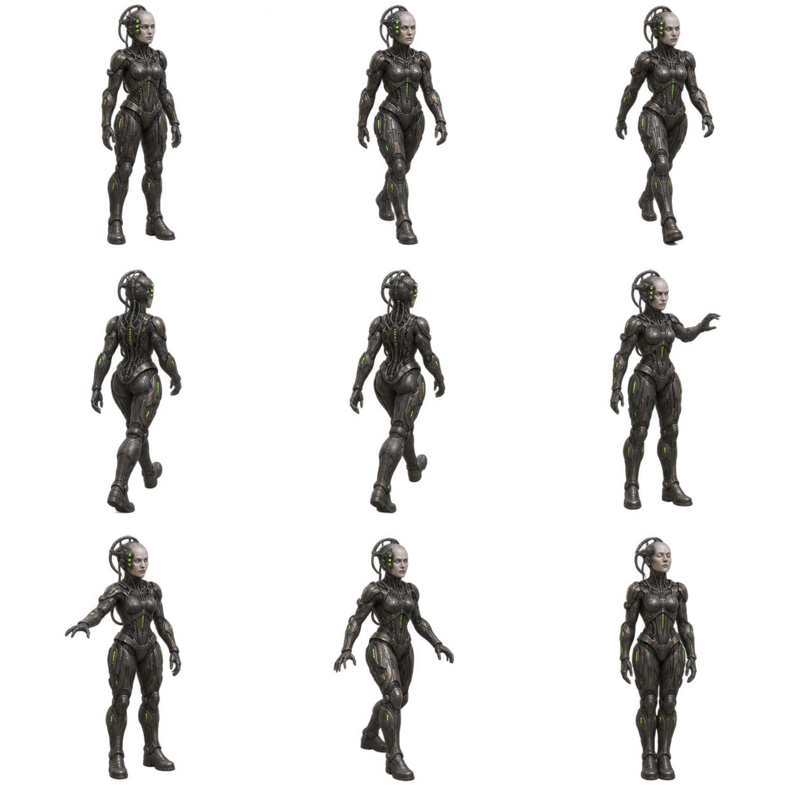
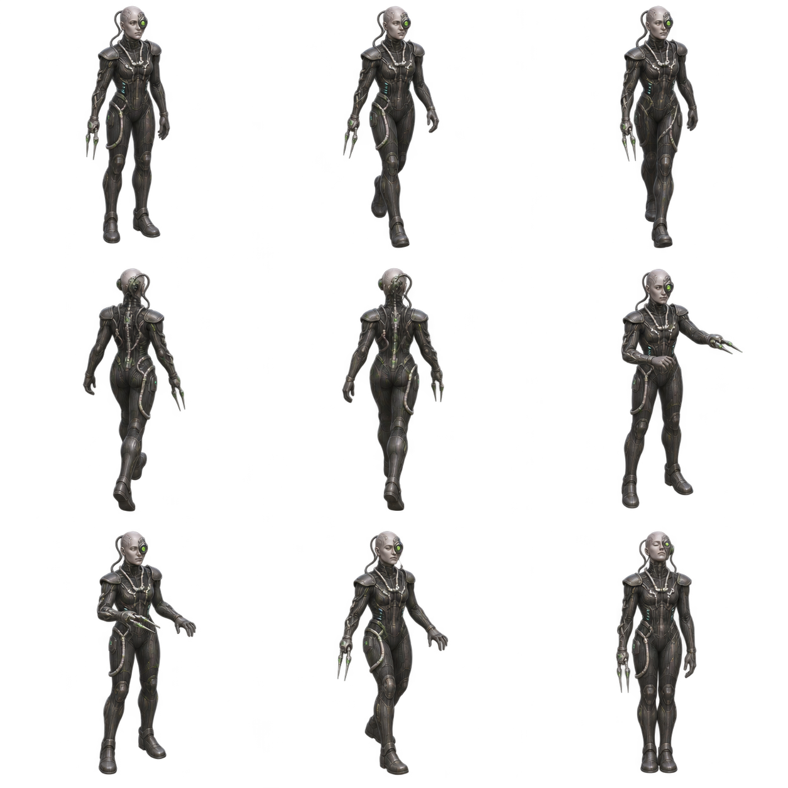
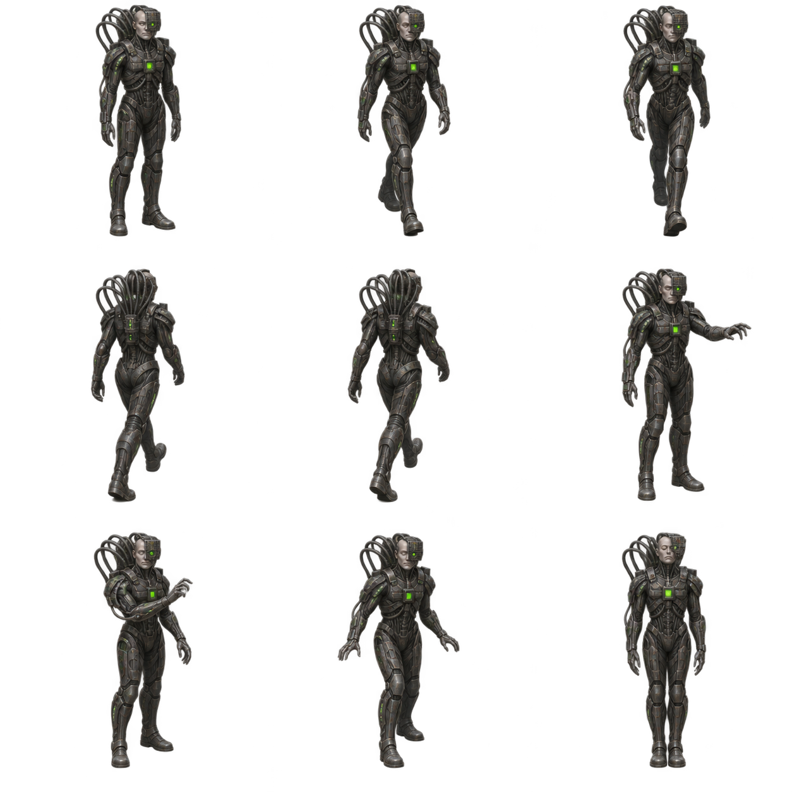
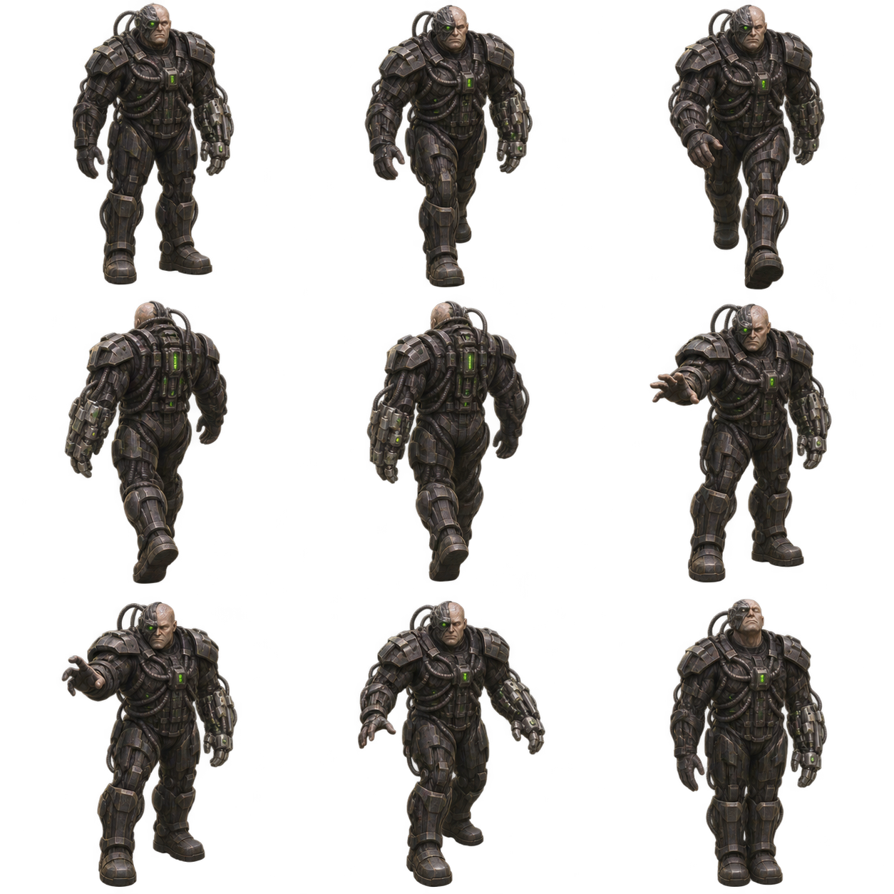
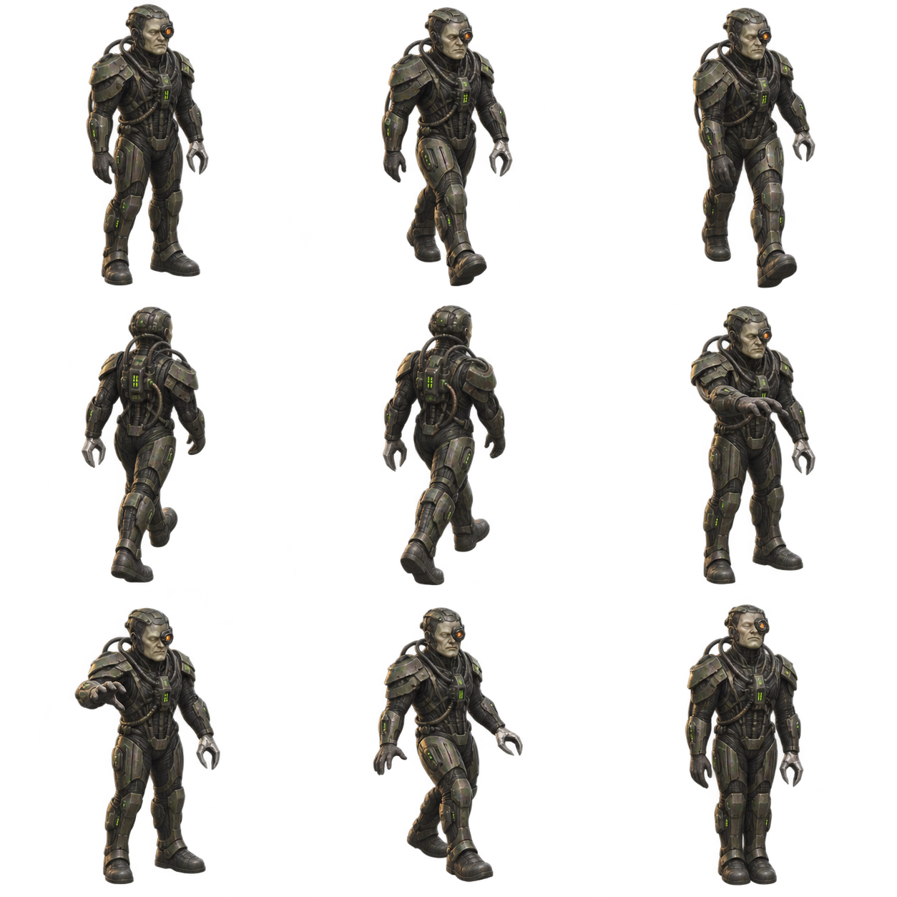
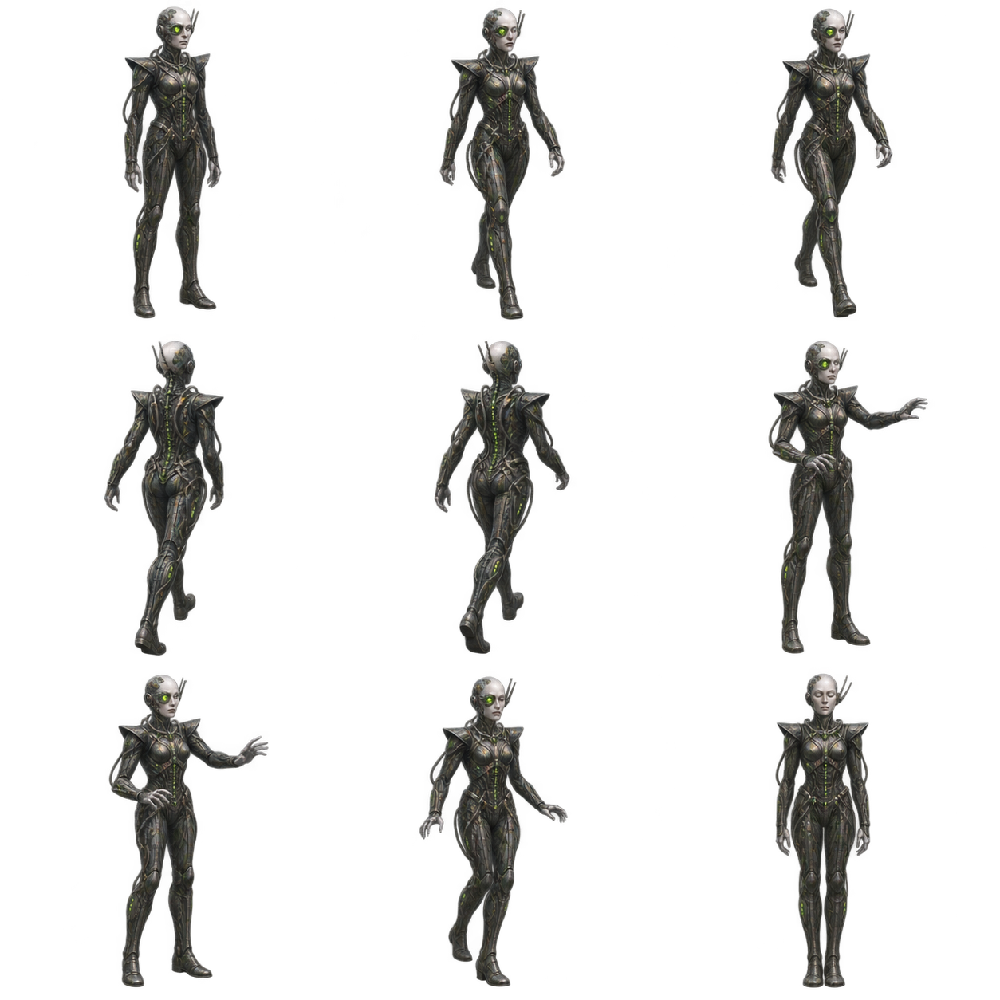

One of Eight · Tactical
Broad shoulders, a red optic and a multi-tool claw.

AGENT WATCH / DOWNLOADABLE THEME
A complete Borg cube interior, built around the Queen's central nexus. Eight distinct drones work at collective systems and return to regeneration when their work stops.
Install Agent Watch 0.4.0 or later. Open Theme library → Refresh GitHub catalog → Borg Cube → Download theme, then choose Use theme.

Reserved for the coordinator. Four unique sequences show her directing the collective, surveying the cube, communing through holographic interfaces and mechanically reassembling at the central nexus. Coordination and delegation use command gestures; research, reading and review use scanning; messages and tools use communion; builds use reassembly. Her idle rotation includes scanning, communion and reassembly. Preview activities cycles through all four sequences.

Broad shoulders, a red optic and a multi-tool claw.

A bronze industrial arm and heavy repair fittings.

A slender silhouette with a three-lens sensor cluster.

Silver instruments and diagnostic probes.

A partial face mask and a fan of neural cables.

A larger industrial chassis and reinforced limbs.

A compact olive-armored body with precision pincers.

A tall silhouette with antenna fins and navigation implants.

Each drone has a linked alcove. Inactive, waiting, completed and interrupted agents return immediately, face outward, step backwards onto the platform and hold a regeneration pose. A new work action makes them step out and walk to the appropriate station. A drone claims its bay while approaching it, so arrivals cannot select an occupied alcove.
The map has 16 alcoves, including eight spare bays for additional agents. Extra drones reuse the first drone's artwork and claim a free bay. If every bay is occupied, they wait near their home and retry; place more alcoves in Edit world to expand capacity. Removed or blocked bays are skipped.
Occupied alcoves have pulsing green edge strips, a rotating plasma-headpiece effect and a moving regeneration scan. Empty alcoves keep their dim base lighting. Reduce animation and movement freezes the lights and Queen poses and places drones directly into or out of their alcoves.
The editable map contains 75 placed objects, 17 scenery types, four floor surfaces and 12 activities. Scenery includes regeneration alcoves, the Queen's nexus and gantry, data and tactical consoles, a repair bench, transwarp coil, neural relay, diagnostic station, fabricator, reactors, hull panels, pillars, rails, conduits, vents and cargo.
Move, mirror, resize, duplicate or remove scenery, paint terrain and change destinations with Edit world. Moving or mirroring a linked alcove moves its drone's home marker. Moving that home marker moves the alcove with it. Leave the entry corridor clear. Saved layouts remain separate from downloaded files and survive theme updates.
Use Theme studio for action mappings and character assignments. Make a personal copy before replacing artwork or editing behavior. characters[].homeDock names the preferred placed alcove; inactiveActivity chooses regeneration whenever that character is not working. objects.alcove.dock sets entry offsets, timing and poses. objects.*.lights sets normalized light positions, color, speed and activation. Drone and Queen sheets use trim: false to retain frame alignment.
Theme manifest · Complete artwork prompts · Research and provenance · Application guide
The alcove design draws on Julien's screen-used regeneration alcove listing. Queen details draw on StarTrek.com's Queen overview. The map, drone designs and animation sequences are original interpretations for this theme.